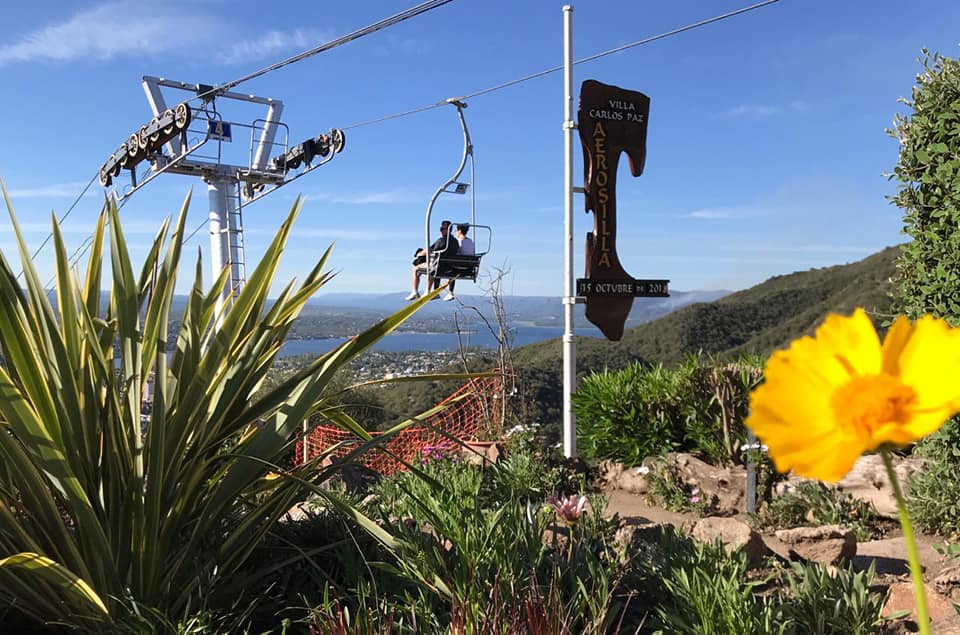
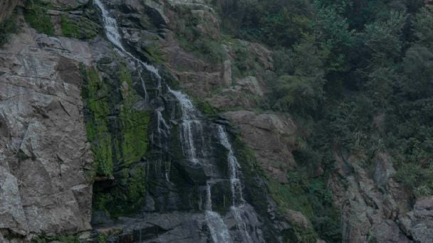
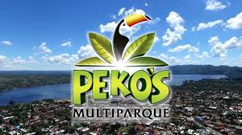
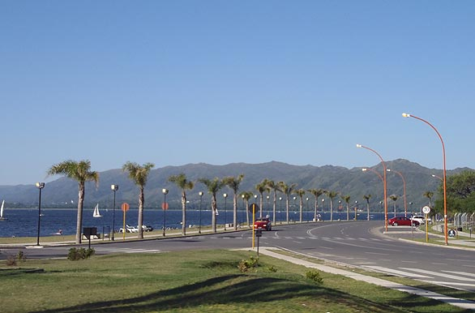

Nuestros Servicios
Valle de punilla siempre te invita a conocer y realizar las mejores actividades de la temporada, tanto en invierno como en verano, algunos de nuestros servicios y visitas guiadas son:
Complejo Aerosilla: Ofrece senderos, miradores, zonas de descanso y servicios y ademas atracciones y actividades como la aerosilla, tirolesa, arco y flecha, entre otras actividades.

Caminata a la Reserva Natural Cascada los Chorrillos, Tanti.
Es una caminata de dificultad baja. Consta de aproximadamente 14kms de recorrido y algunos desniveles, ideal para los que no tienen mucha experiencia caminando en sierras y especial para despejarse y conectarse profundamente con la naturaleza.

Pekos Multiparque: Parque turístico, recreativo y educativo que cuenta con atracciones para todo público, jardines exóticos, juegos para todas las edades, cinema 5D, espectáculos, mini zoo, laberintos, etc.

Paseo por Costanera: En la costanera de Villa Carlos Paz se mezclan paisajes y espacios naturales de lo más hermosos. Entre ellos las montañas y los espejos de agua como el Lago San Roque, ofrece un paseo peatonal, para que grandes y chicos disfruten de caminatas, andar en bici, patines, rollers y una zona de bares y restauranes para disfutar de una gastronomia unica.
